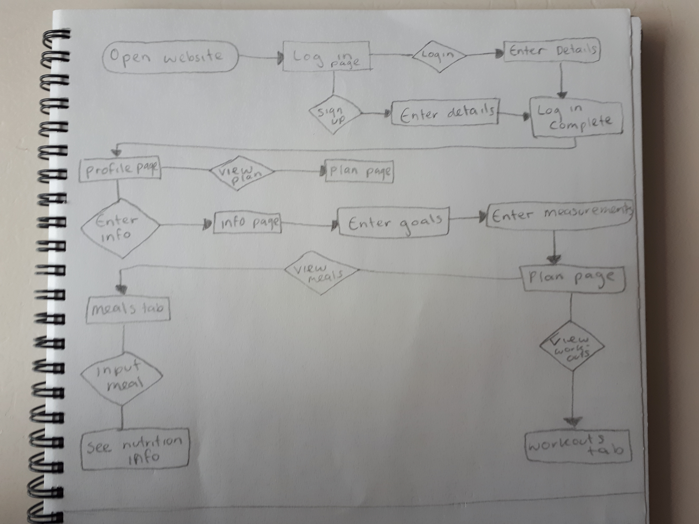
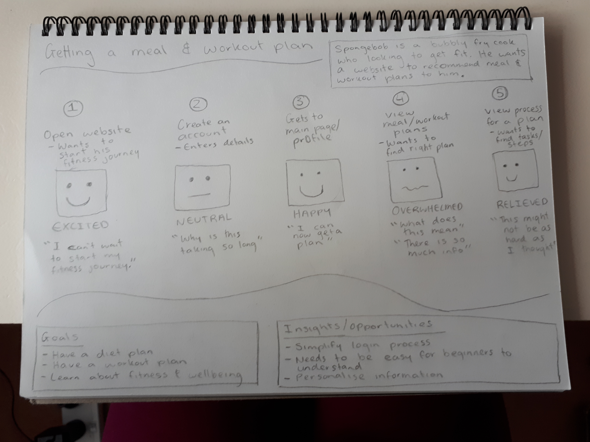
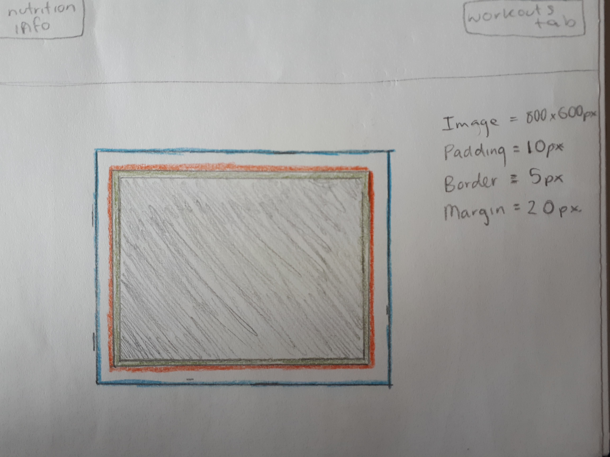

Today in class we discussed user flow diagrams and customer journey maps. These are both things I have done before in previous courses so I already knew how to make them and what to include. We did an activity using the Spongebob example and created a user flow and customer journey map for his scenario.
Here is the user flow:
Here is the customer journey map:
I think that these are going to be useful when creating my website/brief, as it will allow me to think more about how my user/character would actually use my website and what parts of it I need to focus on so that I can make an outcome that solves the user's problem.
Here is the hand drawn version of my box model:
Here is the coded version:
HOW THIS MIGHT BE USEFUL